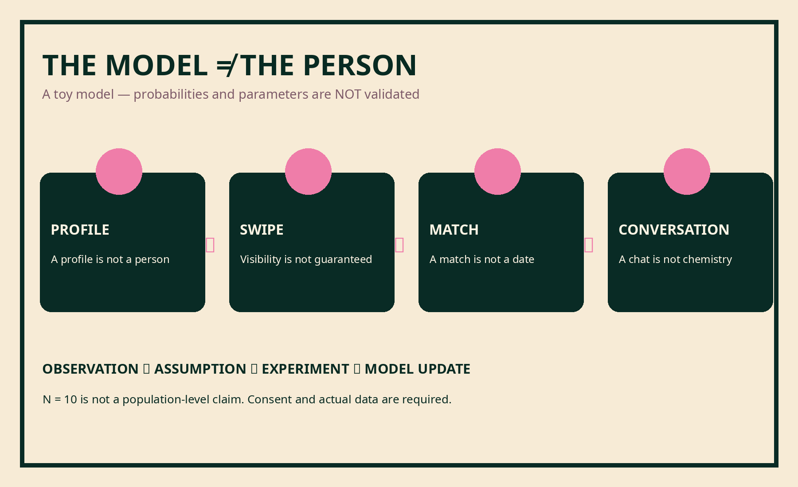

RELATIONSHIP_MODELING / VERSION B
Dating Algorithm
Để một data scientist dạy bạn cách tối ưu chuyện hẹn hò. And then watch his model fail.
A fictionalized stage illustration — not a TED event.
READ CHAPTER →EXPLORE MODEL ↗WATCH ▷Dating Algorithm
Choose your own weights
Jason's original model tries to reduce dating to an optimization problem. Move the sliders to see how quickly a supposed “importance” ranking changes. There is no scientific calibration, no gender defaults, and no score for a human being.

Illustration only: a matching diagram needs defined strategies/payoffs and possible deviations to establish Nash equilibrium.
A correspondence is a starting point.
Switch between two illustrative assignments. These lines have no payoffs or unilateral-deviation test, so neither arrangement proves equilibrium.
L1–R1, L2–R2, L3–R3, L4–R4, L5–R5. Correspondence only; equilibrium is untested.
03 / ONE SMALL DECISION
Invite or keep thinking?
This is a literary counterfactual, not a relationship predictor.
Both outcomes are unknown. Another person always has their own choice.
04 / OBSERVATIONAL DATA SLOT
Ten profiles. Zero published results.
The manuscript mentions five male and five female friends' Tinder profiles but contains no completed metrics. We can't recover real swipe counts from that story. The table below is intentionally empty and should remain so until consent, actual logs and methodology are checked.
| ID | Visual profile score* | Right swipes | Matches | Conversations | Consent |
|---|---|---|---|---|---|
| M1 | — | — | — | — | NOT VERIFIED |
| M2 | — | — | — | — | NOT VERIFIED |
| M3 | — | — | — | — | NOT VERIFIED |
| M4 | — | — | — | — | NOT VERIFIED |
| M5 | — | — | — | — | NOT VERIFIED |
| F1 | — | — | — | — | NOT VERIFIED |
| F2 | — | — | — | — | NOT VERIFIED |
| F3 | — | — | — | — | NOT VERIFIED |
| F4 | — | — | — | — | NOT VERIFIED |
| F5 | — | — | — | — | NOT VERIFIED |
* A subjective description of one profile presentation — never a measure of human worth.

What the model misses
“Getting liked,” “getting matched,” and “being worth meeting again” are different outcomes. The later chapter questions the very ranking system with which it opens. Chemistry, agency, consent and wanting to meet again are not interchangeable with a Tinder conversion rate.
No participant observations or identities are published. Download the blank template. These controls store and send no reader data.
Research notes and verification limits
The published Tinder study used 3,600 evaluations of experimental profiles, separate from the author’s unfilled ten-profile example. See Neyt, Vandenbulcke and Baert, Buss’s cross-cultural study, and Eastwick and Finkel’s speed-dating study.
The Jiang lecture was located; its detailed examples remain only partially verified. The complete audit and limits are in the research notes.
A model in motion.
Hai bản dựng minh họa 24 giây, có âm nền và đang chờ giọng đọc của Jason.
06 / KEEP THE CHAPTER
Read, watch, revisit.


Supplied A5/A4 proofs retain the kit’s working label 04. The book chapter is 08. The kit’s original media and all source files are preserved in the ZIP; the two web films and carousel are reframed derivatives.
Version history
$revision_note
$revisions